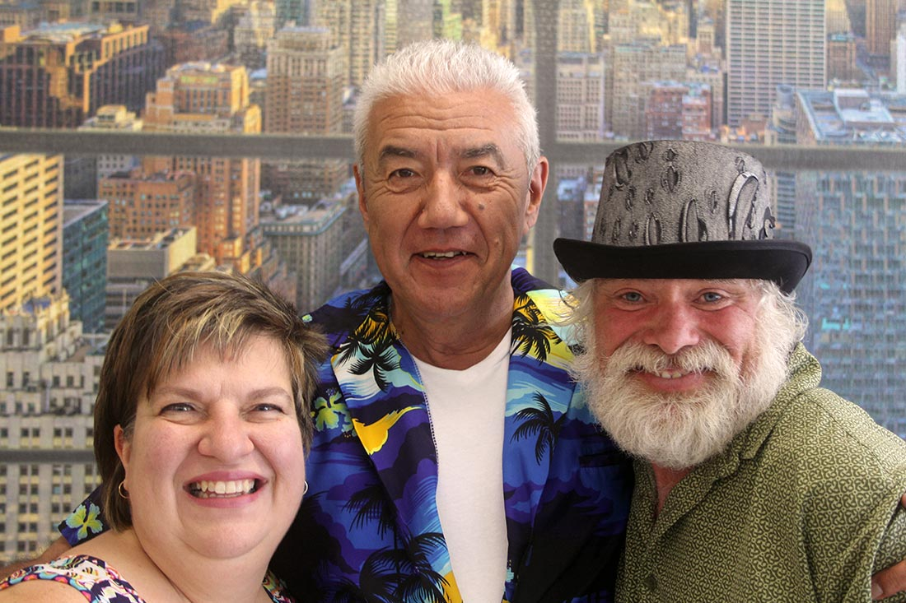
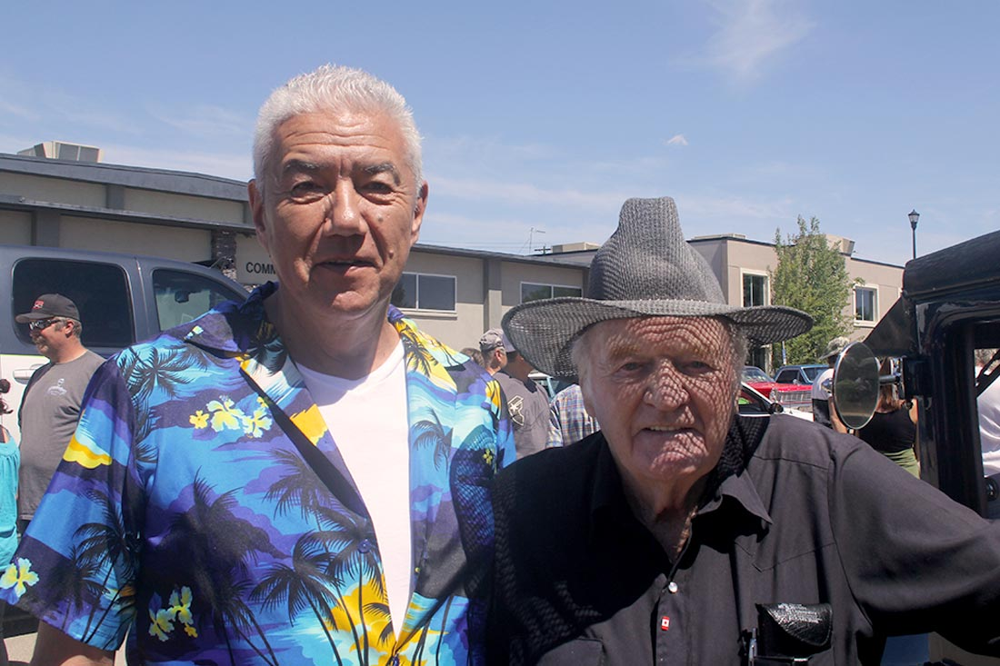
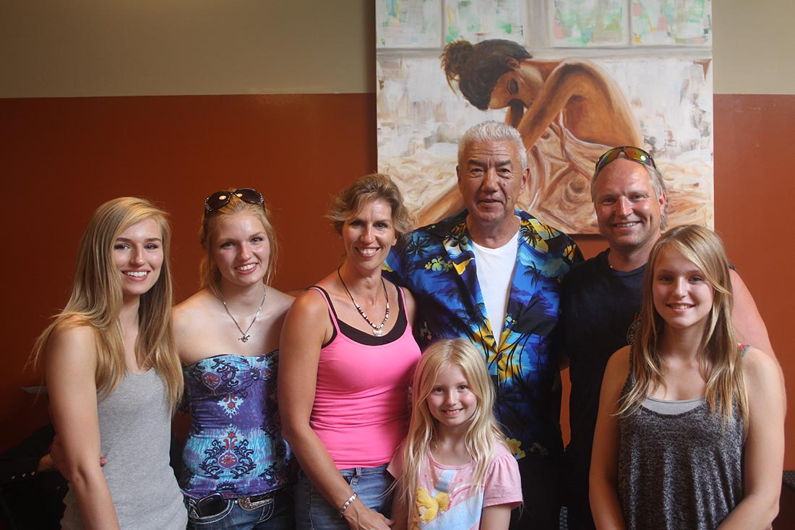
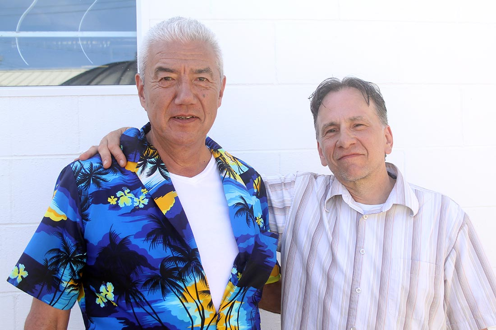

THREE HILLS, ALBERTA
June 4, 2016
SCROLL TO EXPLORE
SCROLL TO EXPLORE
The town was a buzz…the normal population is 3,200 and a couple hundred vehicles - mostly trucks and fixer uppers. Today, 600 super stock, vintage, restored and polished vehicles lined both sides of Main Street …plus 6,000 visitors! 
Today is the annual car rally. Lawn chairs lined both sides of the street. The older folk sitting in the chairs protected by shade. The younger sitting in the sun protected by sunscreen but little else. Either way it looked awesome…
Made acquaintance with Richard and Jan Marz a former town councillor and his wife…born and bred in these parts…lives 3 minutes west of town on their ranch… He raised a little hell here in an earlier time - now lives the good life raising horses. (I believe he was riding before he was walking.) I told him I didn’t ride. He says there is nothing better than being on the back of a horse as she runs full gallop! He loves his horses and they love him. He has taken a lot of soil samples in his day.
Jan said she once watched him lay down on the ground face up in the corral with a wild horse running around. He waited until the horse came over and stood still next to him. He took his belt off and placed it over the neck of the horse. And then bridled him.
Richard had a twinkle in the eye as he invited me to come out to his place. “I got a new stallion,” he says. “Come on over - we can break the both of you in at the same time.” - Tom

One store has dresses in the window that look like they were made for a princess. The door is open. Inside we meet then owners... Vicki and Darrell... They have been waiting for us…Really?!
This is another place where one can lose themselves in a time warp…this is a costume shop with thousands of costumes from the beginning to the present and into the future…Vicki shares her stories…she is Mrs. Dress-up…this is our world…we dress the world…Who knows who wants to be a pirate next week, or an 80-year old Cleopatra? If you like yellow, be a duck. People come here and play dress-up for hours…they come here and find something…we can, and you can, be a little crazy here…
This is not just a costume shop. (Although you should look no further if you need a disguise for Film or TV in Alberta) This is a community of children of all ages…Vicki and Darrell have a special needs child…this family needed a home…
“This community loves my child and I love this community.” Vicki talks about the biz and Darrell talks about Vicki. “She started a theater for little ones. Not everyone fits in with the in crowd but everyone is a superstar at The Tickle Trunk…she loves to work and I love her.”
If you’re coming to the Badlands you need to come to the Tickle Trunk…you need to come to Three Hills. - Tom

As the sun reflected off a dark blue, very vintage Model T (I think) I felt an obligation to speak to the man with calloused hands, spit polishing the rear fender. I mean he was workin’ it. His name was Mr. Craig…came here in ‘96 to settle down with his wife… Seemed like a pretty friendly town…
The kids are all grown up now. …she doesn’t get around much any more. (Talking about his wife). I asked about the car. He says the car’s younger n’ him…how much younger I asked? 5 months says he. What year I ask? 1927.
I invite him to come for coffee and listen for awhile as I brought my guitar and was looking to play in the coffee shop at 3 o’clock. “Bring the wife”, I suggest but he tells me she has to stay at the home. “Maybe when I’m done we can go visit!? He nodded his head in approval…- Tom

After walking the crowded streets of Three Hills for 1.5 hours I searched out an empty lawn chair in the shade. I saw a couple of guys who looked like they were fishing but not actually wanting to catch anything. They immediately started talking to me as if we were long lost friends. Barely got through intros and I was startled by an outreached hand in my face…I took a firm handshake and was pulled out of my lawn chair in an instant by a strong woman. She was surrounded by three beautiful daughters, a son, and a bedazzled husband. He was as surprised as I was. “Hi. I’m Gretchen Neufeld. This is my husband Kevin. My daughter saw you up the street but was too shy to bother you. What are you doing here in Three Hills? You have a car?” I said “Nope, but I am going to be playing at Moments Café very shortly.” I asked Kevin what he does…cattle and a little guitar he tells me. “He’s really good”, Gretchen pipes in. Kevin is feeling uncomfortable and pulls his family away “Leave the guy alone he’s trying to get some shade.”
I head off to the coffee shop…the fishermen bid me ado “Nice to see you here in our town! Funny how nobody can afford a new car!”
- Tom

The coffee shop…just as the door closes someone behind surprised me. “Hey Tom is that you?”
Thomas jumps from his seat. “I’ve been following you for years. I finally get to meet you…I heard your story!” His eyes are a little glazed and he seems nervous…we exchange a few words but he doesn’t link into the conversation…I suggest we go to the back of the shop and have a chat…I want to know more about him…I find out he has First Nations blood…he’s battling addictions…making a life here for 3 years…
Now he is speaking totally coherent, clear and very intelligently… he has a checkered past…he wanted to be a priest…got caught tasting the wine in the church and a few other things in life that sent him down the lost highway...
He came to Three Hills after being released from the Drumheller Prison…he wanted to start over again. He wanted to come here to find a bible…a bit of a rocky start but knows this is a good place to re-start…I ask how long he’s been clean… 5 weeks…
We make a deal… I give him my contacts and ask him to promise this. “The next time you feel the urge, close your eyes, take a deep breath, and then go and help somebody”…he agrees…we part…Thomas will never be the same… - Tom
THE LOCATION:
PEOPLE + PLACES:
THE TICKLE TRUNK →
TOWN OF THREE HILLS →
Explore other locations :